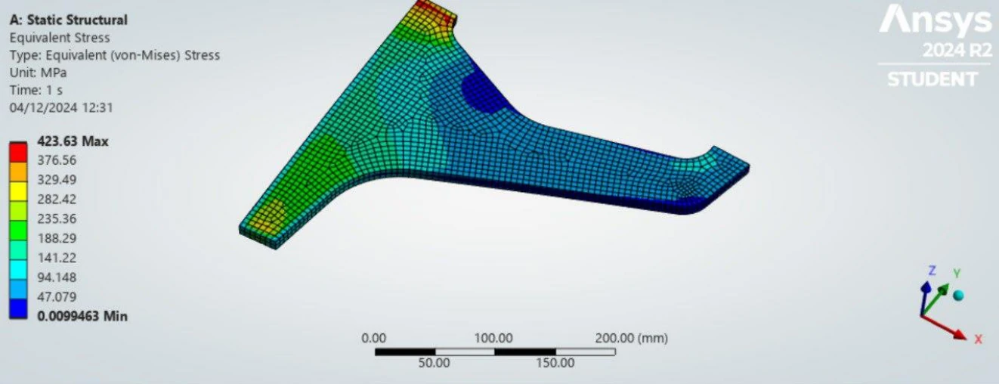
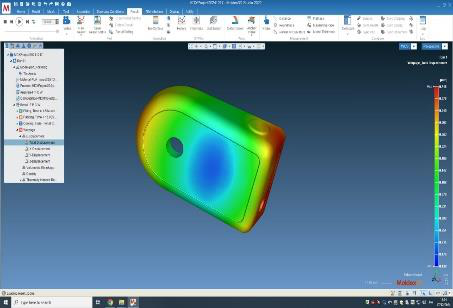
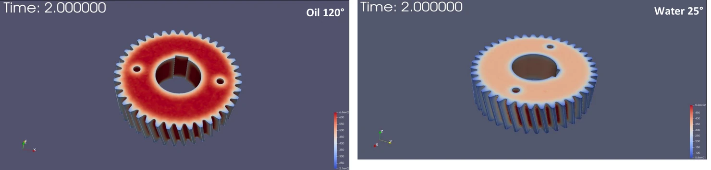
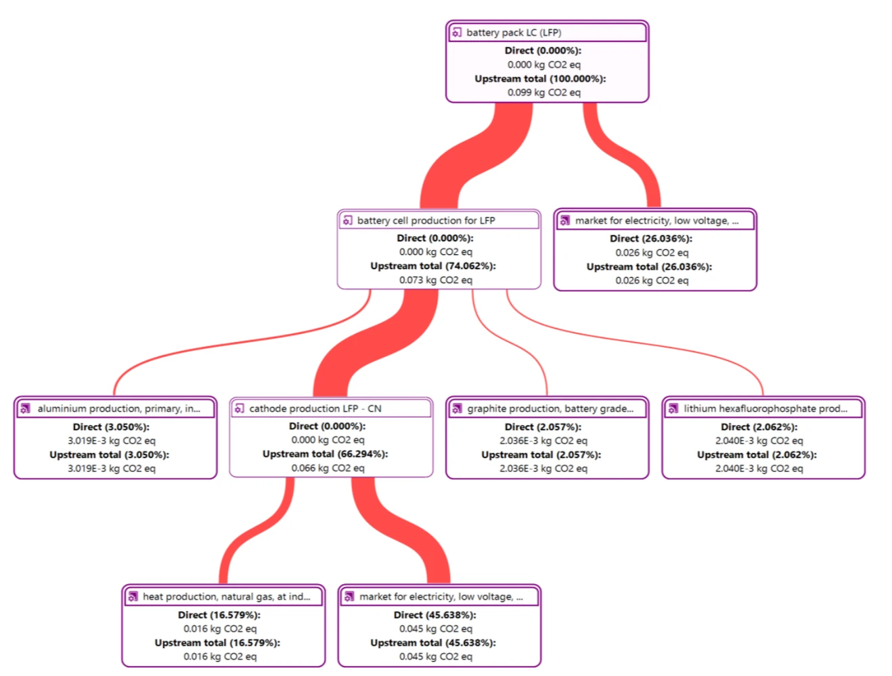

Materials Engineering & Metal Additive Manufacturing
Mohammad Akbari
Master’s graduate of Politecnico di Torino. My work covers metal additive manufacturing, materials characterisation and process simulation.
Projects

Master’s thesis
Laser Powder Bed Fusion of Ti-13Nb-13Zr
Process optimisation and materials characterisation across 27 tested conditions.
Academic projects

Thermo-Calc
Diffusion Simulation in Iron-Based Alloys
Estimating the high-temperature holding time needed to dilute a manganese-rich inclusion in an iron-based alloy.

Thermo-Calc
Precipitation Modelling in Copper–Titanium Alloys
Comparing how ageing temperature affects precipitate evolution and the predicted yield strength of a copper–titanium alloy.

Granta EduPack
Material Selection and Eco-Audit of Aircraft Door
Screening candidate materials for an aircraft-door outer panel and evaluating the selected alloy in a long-haul operating scenario.

ANSYS Workbench
Design and Structural Analysis of Automotive Suspension Component
Comparing steel and carbon/epoxy finite element models of an automotive suspension lower control arm.

ANSYS Workbench
Nonlinear Analysis of Hyperelastic Rubber Support
Modelling the static response of a steel–rubber mount under imposed displacement and a non-uniform pressure load.

Moldex3D
Injection Moulding Process Optimisation
Comparing six material and gate configurations for the exterior surface of an injection-moulded part.

Salome-Meca
Thermal Simulation of Heat Sink and Quenching Process
Two thermal simulations covering steady heat dissipation in an aluminium heat sink and transient cooling of a steel gear.

openLCA
Life Cycle Assessment of Battery Systems
Building an environmental inventory and tracing modelled impacts in two battery supply chains.